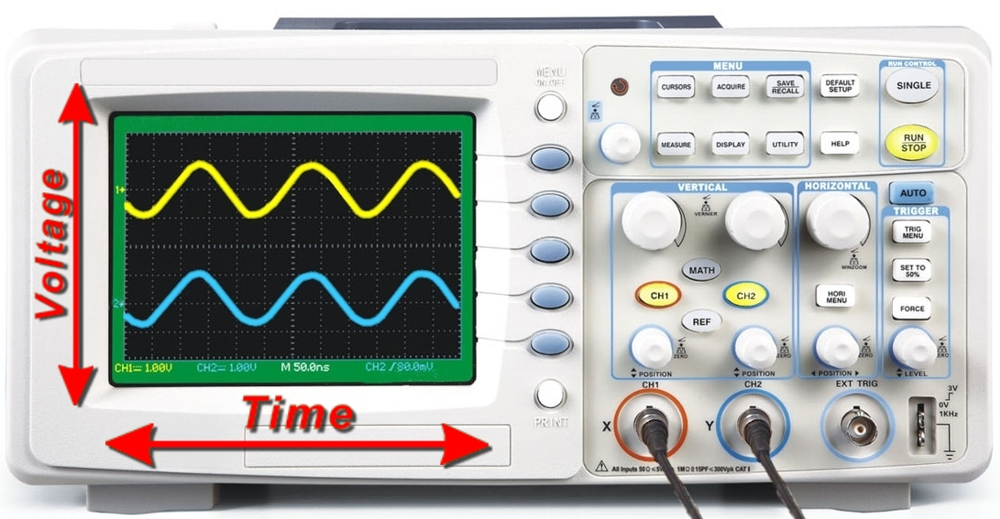
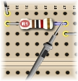
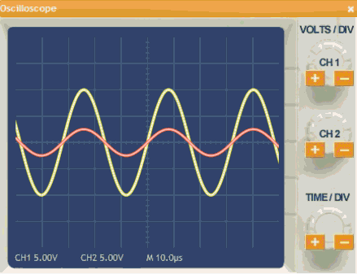
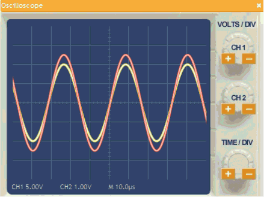
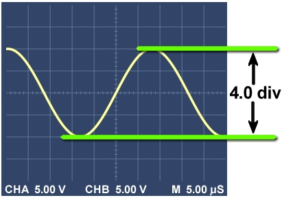
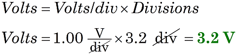

Using an Oscilloscope
|  |
| Figure 1. Oscilloscopes graph AC voltage versus time. |
|  |
| Figure 2. Measuring the voltage drop across R1 |
|  |
| Figure 3. Adjusting volts/div for Channel 2 (Mouse-over to replay animation.) |
|  |
| Figure 4. Adjusting time/div for Channel 2 (Mouse-over to replay animation.) |
|  |
| Figure 5. Measuring peak-to-peak voltage with a scale of 5.00 volts/div |
A DMM measures a DC voltage, reporting a value like 5.79 volts. But to measure AC voltages and frequencies you need an oscilloscope.
How an oscilloscope works
An oscilloscope beam moves up and down in response to positive and negative voltages. At the same time, the beam also sweeps across the face of the screen, from left to right with time. The result is a graph of voltage versus time. By analyzing the graph, you can measure the AC signal.
How to use an oscilloscope
The circuit and the oscilloscope usually share a common ground, so the probe measures voltages with respect to ground. Just as with the DMM, you measure the circuit voltage by touching the oscilloscope probe to various points in the circuit. See Figure 2.
Like most oscilloscopes, the SPARKS oscilloscope can show two signals at once. Our Channel 1 (yellow) shows the function generator voltage, for reference. Channel 2 (red) shows the signal from the probe—wherever you place it in the circuit.
Adjust the voltage scale
You must adjust an oscilloscope for the best scale, just as with a DMM. But now there are two scales to adjust! First, click the CH 1 and CH 2 knobs to adjust the vertical scales so the whole height of the waves fit on the screen. See Figure 3. After adjusting, notice the very important volts per division settings. They might be different for each channel.
Adjust the time scale
Second, click the time/div knob to adjust the horizontal scale so one whole cycle fits in the screen. See Figure 4. After adjusting, notice the very important time per division setting. NOTE: This one setting controls both channels.
Read the graph
Finally, read the face of the oscilloscope like any graph: counting the number of divisions (or tick marks) and multiplying by the scale for each division. For example, in Figure 5 the display is at 5.00 volts/division and the wave spans 4.0 divisions. So, you can calculate this voltage:

You will do a similar counting and calculating to find the time span of the wave.
To learn more about oscilloscopes, visit these helpful web sites: